Released: April 6, 2011
Next Release: April 13, 2011
Jet fuel conundrum
While global oil demand growth, physical disruption in Libyan crude production, and unrest in North Africa and the Middle East all have caused crude oil and petroleum product prices to rise in recent months, few product markets have shown as much strength as jet fuel. Not only are jet fuel prices in the United States and elsewhere back at highs unseen since mid-2008 (Figure 1), but jet fuel prices generally have risen faster than those of both crude oil and many other refined products in recent months. Jet fuel crack spreads - the notional price difference between a barrel of jet fuel and one of crude oil - have surged to over two-year highs in the case of Brent crude oil (Figure 2), or three-year highs in the case of the New York Harbor jet fuel- New York Mercantile Exchange (NYMEX) West Texas Intermediate (WTI) crack. Meanwhile, the price premium of jet fuel versus NYMEX heating oil and reformulated blendstock for oxygenate blending (RBOB), i.e., unfinished gasoline, also looks unusually wide (Figure 3). Given U.S. jet fuel consumption had been in a downturn since 2000, leaving jet fuel with a much diminished share of the U.S. demand barrel, this could be seen as a surprise. Why are jet fuel prices so high?
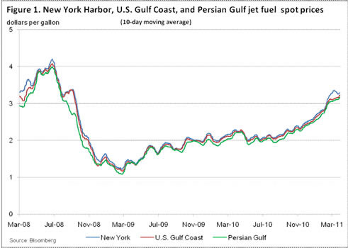
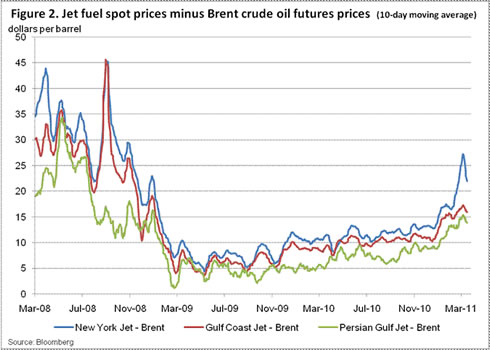
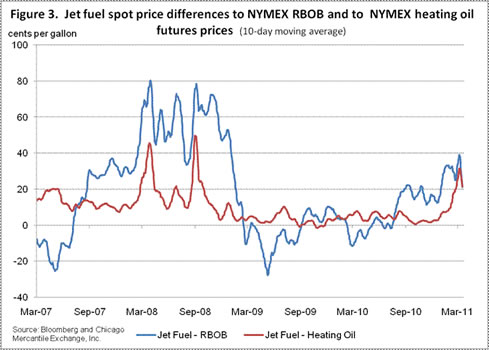
First, global jet fuel demand has been showing signs of renewed strength. This is, of course, particularly true of emerging and newly industrialized economies such as China, where air travel demand is growing rapidly. The General Administration of Civil Aviation of China recently reported a 16.8 percent annual increase in air traffic in January. Not surprisingly, Chinese jet fuel demand is surging. In expectation of further growth, the country is heavily investing in its aviation sector.
Even in mature, industrialized economies such as the United States, the contraction in jet fuel demand seen over the last several years seems to have come to an end. Since reaching 1.7 million barrels per day (MMbbl/d) in 2000, after falling to a low of 1.4 MMbbl/d in 2009, U.S. jet fuel demand rebounded by 2.2 percent year-on-year in 2010, based on monthly data from the U.S. Energy Information Administration. The year 2009, which saw the single largest annual drop in U.S. jet fuel consumption (almost 150,000 barrels per day (bbl/d)), might signal a bottom. Many factors accounted for the demand contraction of the last decade, such as the terror attacks of September 2001, the recent recession and, last but not least, dramatic improvements in aircraft fuel efficiency and fleet management. As the economy is recovering, the impact of the terror attacks on air travel has also faded. After recent large improvements in fuel efficiency, the airlines might also find further fuel saving opportunities more elusive.
Recent events in the Middle East and Japan may take a temporary toll on demand. The International Air Transport Association (IATA) recently reported a six- percent increase in international scheduled passenger traffic for February 2011 and a 2.3 percent gain in air freight year-on-year. However impressive those numbers might look, they mark a step back from even faster growth of 8.4 percent and 8.7 percent, respectively, reported for January. IATA attributes the slowdown to unrest in North Africa and the Middle East, and warns that the tragic earthquake and tsunami in Japan might further dent growth in March.
But even as they may dampen demand growth, those recent events can also negatively affect supply. Unrest and confrontation in Libya have withheld from the market significant volumes of light, sweet crude oil, which lends itself to the production of light products such as middle distillates and jet fuel. Market concerns about the perceived risk of oil disruptions elsewhere in the region, as a result of political unrest, are particularly unnerving for jet fuel markets, given Europe's significant dependence on jet fuel imports from the Middle East. In 2010, Organisation for Economic Co-operation and Development (OECD) Europe imported nearly 190,000 bbl/d of jet fuel from the Middle East, accounting for close to 15 percent of average consumption of 1.27 MMbbl/d. In the last 10 years, Middle East exports have met between 10 percent and 18 percent of European jet fuel demand.
Meanwhile, the tragic Japanese earthquake and tsunami, while they might have moderated further crude price gains in the short term, had an opposite effect on jet fuel markets. By forcing several refineries to shut down, they reduced crude oil demand but curtailed production of refined products, notably jet fuel. Since around 2006, Japan had swung from a small jet fuel net importer to a net exporter, mostly to China and Hong Kong, and less frequently to the United States. Japan now looks set to resume its status as a net importer, at least for some time.
This latest disruption comes on top of other, broader factors that had served to curtail jet fuel production, such as seasonal refinery maintenance and strength in middle distillates markets. It may not come as a surprise that draws in OECD product inventories appear to have particularly affected jet fuel stocks. In the United States, weekly data suggest total product inventories have retreated from their recent highs, but remain well-supplied relative to levels typically seen at this time of year. In contrast, jet fuel inventories have slipped close to the bottom of their range, recently.
Unlike the much publicized gasoline and heating oil prices, jet fuel prices tend to keep out of the public eye, perhaps because consumers don't pay for jet fuel directly. As jet fuel costs represent a significant portion of total airline costs, it is easy to see how higher fuel prices can affect the airline industry's bottom line and their plans for pricing airline tickets. The military, another major jet fuel consumer, is also greatly affected. It doesn't help that futures markets offer the airlines only partial ability to hedge against such jet fuel price increases, due to the lack of a jet fuel futures contract and growing disparities between jet fuel and other petroleum prices. Those companies that sought to use WTI crude oil futures recently to hedge their exposure to jet fuel price risk would have been particularly affected, given the gap between WTI and the rest of the oil market. Even Brent and NYMEX heating oil futures, which outperformed NYMEX WTI futures but lagged the gains in jet fuel markets, would not have fully captured the run-up in jet fuel prices.
It remains to be seen how rising jet fuel prices, if they continue, would affect the airline industry and the nascent recovery in air travel demand. Ultimately, the market could adjust to rising jet fuel prices by curtailing demand, which could cause prices to fall back. In the short term, however, jet fuel prices appear likely to remain high.
Retail gasoline and diesel prices show weekly increase
The U.S. average retail price of regular gasoline gained almost nine cents over the last week. At $3.68 per gallon, gasoline costs $0.86 per gallon more than this time last year. The biggest increase in the country was in the Midwest where gasoline prices surged 13 cents on the week. On the Gulf Coast, gasoline prices rose eight and a half cents, and East Coast prices gained just under eight cents. Gasoline prices in the Rocky Mountains were six cents higher this week. Prices on the West Coast increased three and a half cents to $3.95 per gallon, which remains the most expensive of any major region in the country.
Diesel prices were also higher on the week, with the national average increasing more than four cents. At $3.98 per gallon, diesel costs $0.96 per gallon more than last year at this time. The biggest regional increase was in the Rocky Mountains, where diesel prices were up almost six cents, marking the 19th consecutive weekly increase for the region. On the West Coast, diesel prices were more than a nickel higher on the week, remaining the most expensive in the country at $4.21 per gallon. Both the Midwest and Gulf Coast saw gains of just under a nickel per gallon. Diesel prices on the East Coast gained three cents this week.
Propane inventories continue to fall
Total U.S. propane stocks declined again last week, drawing 1.1 million barrels of inventory to end at 25.8 million barrels, which is 8.1 percent lower than the same week last year. The Midwest regional stocks fell by almost 1.0 million barrels, while the East Coast inventories drew 0.2 million barrels. The Gulf Coast region added close to 0.1 million barrels of inventory while the Rocky Mountain/West Coast regional stocks were down slightly. Propylene non-fuel use inventories represented 6.3 percent of total propane inventories.
Text from the previous editions of This Week In Petroleum is accessible through a link at the top right-hand corner of this page.
| 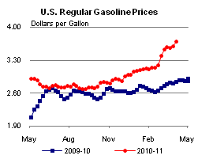 | 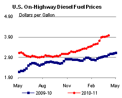 | ||||||
| Retail Data | Changes From | Retail Data | Changes From | ||||
| 04/04/11 | Week | Year | 04/04/11 | Week | Year | ||
| Gasoline | 3.684 | Diesel Fuel | 3.976 | ||||
| 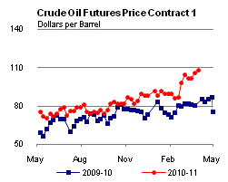 | 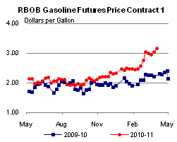 | ||||||||||||||||||||||||||
|
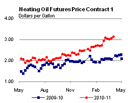 | ||||||||||||||||||||||||||
| *Note: Crude Oil Price in Dollars per Barrel. | |||||||||||||||||||||||||||
| 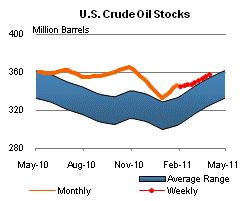 | 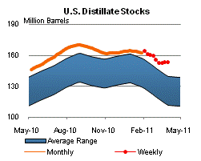 | ||||||
| 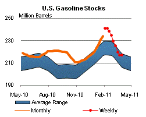 | 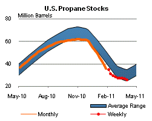 | ||||||
| Stocks Data | Changes From | Stocks Data | Changes From | ||||
| 04/01/11 | Week | Year | 04/01/11 | Week | Year | ||
| Crude Oil | 357.7 | Distillate | 153.5 | ||||
| Gasoline | 216.7 | Propane | 25.763 | ||||